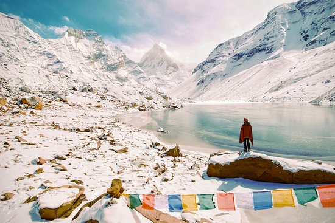

KEDAR TAL TREK

- Maximum Altitude:16,110 feet
- Trek Duration:7 days
- Best Season: During the months of May-June and September-October
- Difficulty Level: Moderate
Kedar Tal - High Altitude Lake of Shiva
Kedartal also known as ‘Shiva’s Lake’ is one of the highest lakes in Uttarakhand.This immaculate glacial lake is seated at an elevation of 4,912 metres above sea level in the Uttarkashi district.
KedarTal lake is formed by the melting of Kedar glacier, thereby giving birth to Kedar Ganga River which is an important tributary of Bhagirathi River. Located in the Gangotri area of the Garhwal Himalayas, this trek in Uttarakhand is ideal for mountain aficionados as it offers remarkable views of the Great Himalayan ranges such as the Jogin peaks, the Bhirgupanth peak and the Thalayasagar peak. This high altitude glacial lake is the hidden gem of Uttarakhand. Amongst the snow-shielded peaks and landscape, the explorers can also get a sight of several mountain wildlife species such as the Blue Sheep, Goral, and the famous Himalayan Black Bear on Kedartal Trek.
